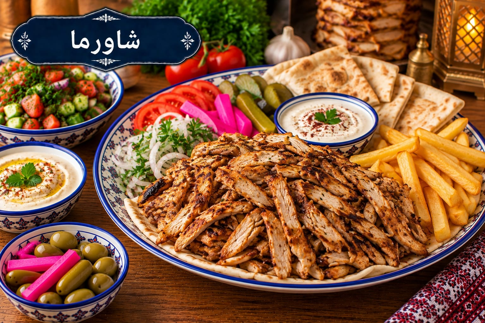

شاورما
شاورما دجاج منزلية

مقادير شاورما
- 800 غ دجاج شرائح
- 3 ملاعق كبيرة لبن
- 2 ملعقة كبيرة خل
- 2 ملعقة كبيرة زيت
- 1 ملعقة صغيرة ملح
- 1 ملعقة صغيرة بابريكا
- ½ ملعقة صغيرة فلفل أسود
- ½ ملعقة صغيرة كمون
- ¼ ملعقة صغيرة قرفة
طريقة عمل شاورما
- اخلطي اللبن والخل والزيت والملح والبهارات وانقعي الدجاج ساعتين على الأقل في الثلاجة.
- أخرجي الدجاج قبل الطهي بوقت قصير وسخني مقلاة ثقيلة جدًا.
- اطهي الدجاج على دفعات صغيرة 6–8 دقائق مع التقليب حتى ينضج تمامًا ويتحمر بدل أن يسلق في سوائله.
- اتركيه دقيقة ثم قدميه مع الخبز والثومية والمخلل.